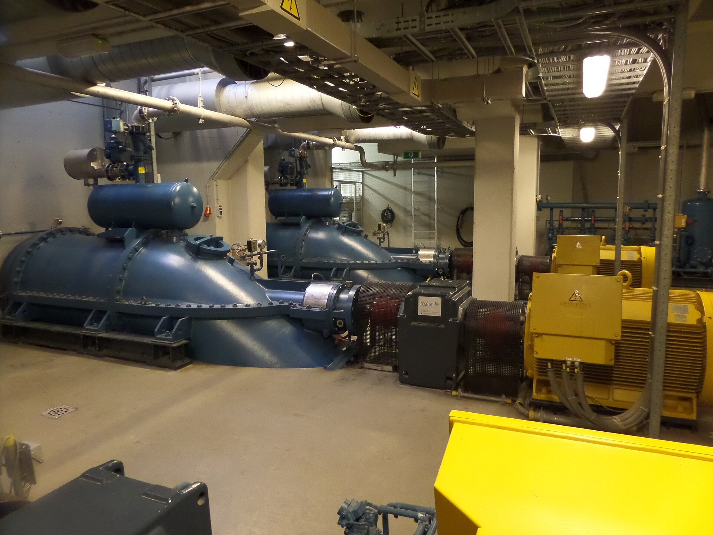
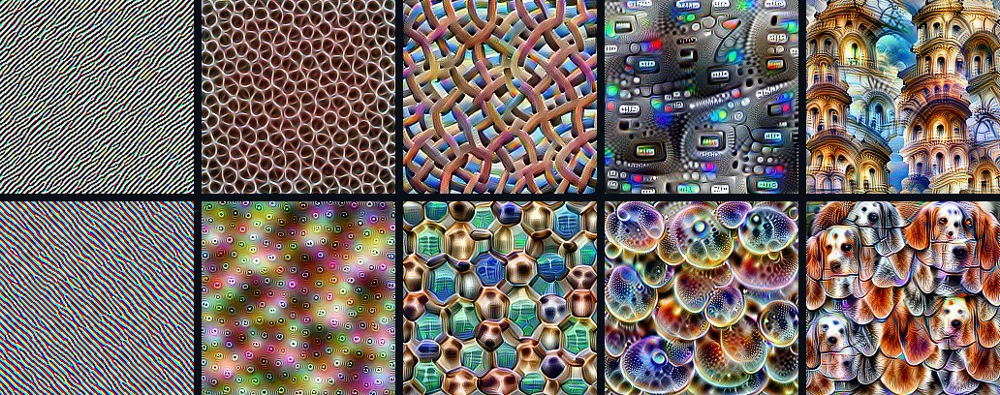
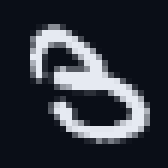
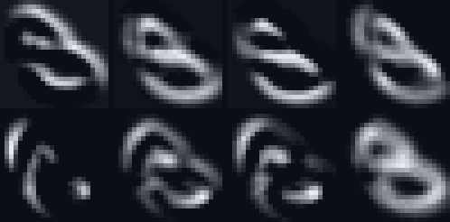
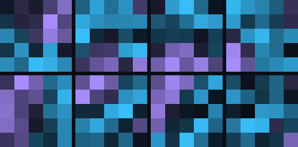
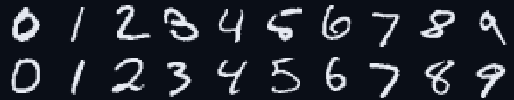

¿Qué hay dentro de los modelos que hemos usado, y cómo aprenden?
La neurona artificial
Una neurona es un puntaje

Estación de bombeo Hollandsch-Duitsch Gemaal, Países Bajos. Foto: PiusImpavidus, Wikimedia Commons, CC BY-SA 4.0.
Detalle: la neurona en una fórmula
Consulta
La neurona artificial
La neurona en una fórmula
Suma ponderada
Activación
En el ejemplo: , y .
Los pesos y el sesgo son los parámetros que se aprenden. La sigmoide da un número entre 0 y 1; la ReLU, la más usada hoy dentro de las redes, deja pasar los valores positivos y anula los negativos.
1943 y 1958 · el perceptrón
Una máquina que aprendía de ejemplos
Mark I Perceptron. Hay y Murray, Mark I Perceptron Operators' Manual, Cornell Aeronautical Laboratory (1960), fig. 2. Wikimedia Commons, dominio público.
1943. McCulloch y Pitts: una neurona como unidad lógica.
1958. Rosenblatt: los pesos se ajustan solos con ejemplos.
La cámara era la entrada; las unidades de asociación, los pesos; el panel de respuesta, la salida.
1969 · el límite
Una sola neurona traza una sola línea
Minsky y Papert (1969), Perceptrons. El entusiasmo se enfrió: es el primer invierno de la línea de tiempo de la Sesión 1.
El perceptrón multicapa
Muchas neuronas, en capas: una red
Cada neurona de una capa recibe todas las salidas de la anterior.
La activación no lineal es la clave: sin ella, diez capas valen lo mismo que una.
Con neuronas suficientes, una capa oculta aproxima cualquier función continua (Hornik et ál., 1989).
Aprender es optimizar
Aprender es bajar un valle con niebla
La pérdida mide cuánto se equivoca la red: es la altura del valle.
Cada paso mira la pendiente bajo los pies y baja un poco: descenso de gradiente.
Cada paso usa una muestra de los datos (un minilote): más rápido, con algo de ruido.
Detalle: la regla de cada paso
Consulta
Aprender es optimizar
La regla de cada paso
Pérdida: el error promedio sobre los datos
Un paso de descenso de gradiente
Con un minilote B
es la tasa de aprendizaje: el tamaño del paso.
es el gradiente: hacia dónde sube más la pérdida. Restarlo es bajar.
Para decidir «falla o no falla», como en el 5A, la pérdida usual es la entropía cruzada:
La retropropagación · 1986
Repartir la culpa del error, hacia atrás
El error se mide a la salida.
Se reparte hacia atrás: cada peso recibe su parte de la culpa y se corrige en proporción.
PyTorch hace estas cuentas solo: diferenciación automática. Por eso en el 5A nadie deriva nada.
Rumelhart, Hinton y Williams (1986), Nature 323.
Detalle: la regla de la cadena
Consulta
La retropropagación
La regla de la cadena, en una red de dos capas
Hacia adelante
Hacia atrás
El primer factor, , se calcula una vez a la salida y se reutiliza para todas las capas anteriores: por eso el método es eficiente.
Con muchas capas, la cadena se alarga, pero la idea es la misma: multiplicar las pendientes de cada eslabón, de la salida hacia la entrada.
En el 5A no se escribe código: se cambian las capas, las neuronas, la tasa de aprendizaje y el dropout, y se leen las curvas.
Sobreajuste · leer las curvas
Memorizar no es aprender
Como en un tablero: si la línea de validación sube mientras la de entrenamiento baja, la red está memorizando.
Red de 3 capas ocultas de 128 neuronas, con 400 registros del AI4I 2020 (Matzka, 2020; UCI, CC BY 4.0). Generado con ejemplos/curvas_5a.py.
Regularización
Dos frenos contra la memoria
Dropout: en cada paso se apagan al azar algunas neuronas; ninguna puede cargar sola con la respuesta (Srivastava et ál., 2014).
Parada temprana: quedarse con la época de menor error en validación.
La misma red y los mismos datos de la diapositiva anterior, con dropout del 30 %. Generado con ejemplos/curvas_5a.py.
Aprendizaje profundo
Cada capa ve algo más abstracto

bordestexturaspatronespartesobjetos
De la primera capa (izquierda) a las más profundas (derecha) de GoogLeNet. Olah, Mordvintsev y Schubert (2017), «Feature Visualization», Distill, CC BY 4.0; se muestran 2 de sus 6 filas.
En la Sesión 4, las redes convolucionales aprendían sus filtros. Apiladas, construyen rasgos cada vez más abstractos: de bordes a objetos.
Un ejemplo real · MNIST
Una red convolucional que lee dígitos

Entrada
28 × 28 píxeles
→

Capa 1 · 8 mapas
bordes en distintas direcciones
→
Capa 2 · 16 mapas
combinaciones más abstractas
→
3
Salida
10 puntuaciones

Filtros aprendidos (capa 1)Sobel (Sesión 4)
97,8 %
de las 10.000 imágenes de prueba, que la red nunca vio. 2 épocas, 10 s en un portátil, 5.994 parámetros.
Lo que más confunde: 2 leído como 7 (18 veces); 9 leído como 7 (17 veces); 5 leído como 8 (12 veces).
MNIST (LeCun et ál., 1998). Red de 2 capas convolucionales entrenada con ejemplos/cnn_mnist.py. Según los autores, su lector de cheques funcionaba en bancos de EE. UU. desde junio de 1996 (sec. X-D).
Detalle: la convolución y la matriz de confusión
Consulta
Redes convolucionales
La convolución, paso a paso
Es la misma operación de los filtros de la Sesión 4. La diferencia: en Sobel, los nueve pesos de los escribió una persona; en una red convolucional son pesos que se aprenden con descenso de gradiente, como los de cualquier neurona.
Después de cada convolución, la red aplica la activación (ReLU) y reduce el tamaño quedándose con el máximo de cada vecindario de 2 × 2.
Consulta
Redes convolucionales
La matriz de confusión de la CNN
real ↓ · leído →
0
1
2
3
4
5
6
7
8
9
0
974
0
0
0
0
0
1
1
3
1
1
0
1129
3
1
0
0
1
1
0
0
2
1
4
998
0
1
0
1
18
9
0
3
2
0
2
984
0
6
0
7
9
0
4
1
1
3
0
962
0
3
5
3
4
5
2
1
1
7
0
863
1
5
12
0
6
8
4
1
1
2
1
937
0
4
0
7
0
2
5
1
0
0
0
1017
1
2
8
4
0
2
0
3
0
1
7
952
5
9
4
5
0
3
5
2
0
17
6
967

Filas: el dígito real. Columnas: el que leyó la red. La diagonal son los aciertos; fuera de ella, los errores. Es la misma matriz que usaron en el Laboratorio 4B.
10 000 imágenes de prueba de MNIST. Generado con ejemplos/cnn_mnist.py.
Síntesis
Lo que nos llevamos de esta charla
Neurona
Un puntaje: entradas por pesos, más una activación
Aprender
Bajar el valle de la pérdida, paso a paso, con la culpa repartida hacia atrás
El riesgo
Memorizar. Los frenos: dropout y parada temprana
Profundidad
Capas que construyen rasgos cada vez más abstractos
Después de la pausa: ¿cómo lee una red un texto completo?
A continuación · 60 min
Laboratorio 5A · Del perceptrón a la red profunda
Predecir la falla de una máquina de MantenIA a partir de sus sensores: temperatura, velocidad de giro, torque y desgaste de la herramienta.
Cambiar
capas, neuronas, tasa de aprendizaje y dropout
Leer
las curvas: ¿aprende o memoriza?
Sin escribir código
notebook de configuración, en parejas
Referencias de la charla inicial
Para profundizar
McCulloch, W. S. y Pitts, W. (1943). A logical calculus of the ideas immanent in nervous activity. Bulletin of Mathematical Biophysics 5(4), 115–133. DOI · Rosenblatt, F. (1958). The perceptron. Psychological Review 65(6), 386–408. APA (archivo)
Hay, J. C. y Murray, A. E. (1960). Mark I Perceptron Operators' Manual. Cornell Aeronautical Laboratory. DTIC · Minsky, M. y Papert, S. (1988). Perceptrons, ed. ampliada (orig. 1969). MIT Press. MIT Press (archivo)
Rumelhart, D. E., Hinton, G. E. y Williams, R. J. (1986). Learning representations by back-propagating errors. Nature 323, 533–536. DOI · Hornik, K., Stinchcombe, M. y White, H. (1989). Multilayer feedforward networks are universal approximators. Neural Networks 2(5), 359–366. DOI
Srivastava, N. et ál. (2014). Dropout: a simple way to prevent neural networks from overfitting. JMLR 15(56), 1929–1958. JMLR
LeCun, Y., Bottou, L., Bengio, Y. y Haffner, P. (1998). Gradient-based learning applied to document recognition. Proceedings of the IEEE 86(11), 2278–2324. PDF del autor · Olah, C., Mordvintsev, A. y Schubert, L. (2017). Feature visualization. Distill. distill.pub
Matzka, S. (2020). Explainable artificial intelligence for predictive maintenance applications. AI4I 2020, IEEE, 69–74. DOI · AI4I 2020 Predictive Maintenance Dataset. UCI. DOI, CC BY 4.0
Prince, S. J. D. (2023). Understanding Deep Learning, cap. 3–7, 9 y 10. MIT Press. PDF oficial · LeCun, Y., Bengio, Y. y Hinton, G. (2015). Deep learning. Nature 521, 436–444. DOI
Zhang, A., Lipton, Z. C., Li, M. y Smola, A. J. (2023). Dive into Deep Learning, cap. 5 y 7. d2l.ai · Russell, S. y Norvig, P. (2021). Artificial Intelligence: A Modern Approach, 4.ª ed., cap. 21. Pearson